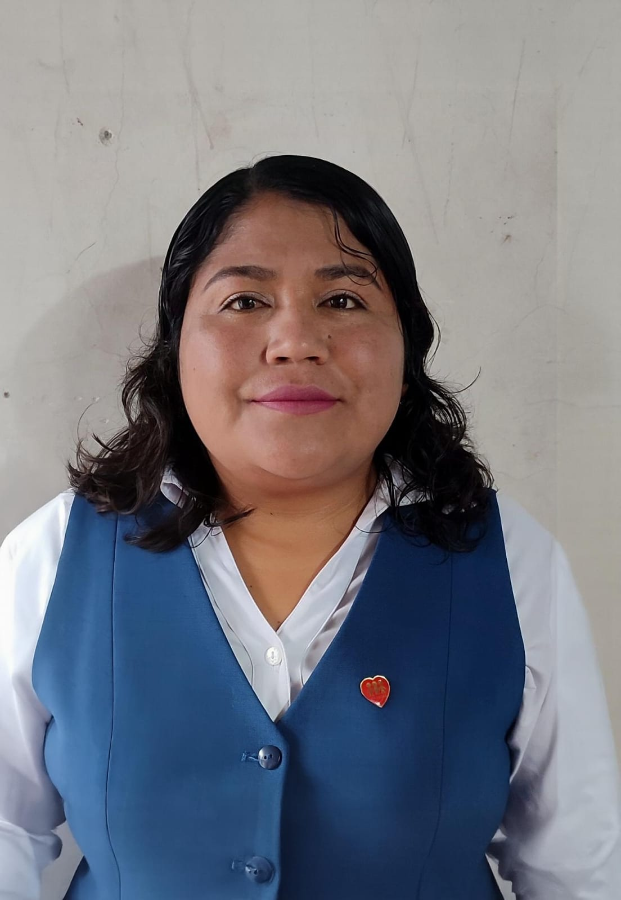

Autoridades
Conoce al equipo directivo que lidera nuestra institución con compromiso y visión educativa transformadora.
Mgtr.Veronica Navarrete-RECTORA
Responsabilidades
Lidera la institución con visión y compromiso hacia la excelencia educativa, la transformación social y el cumplimiento de la misión institucional.

Mgtr.Fausto Sarchi-VICERRECTOR
Responsabilidades
Apoya la gestión académica y administrativa, asegurando el cumplimiento de estándares de calidad y facilitando procesos educativos innovadores. Especialidad en Soporte Tecnico, Diseño y Desarollo Web.

Lic.Sara Jacome-INSPECTORA
Responsabilidades
Vela por el cumplimiento de normas, disciplina estudiantil, bienestar integral de la comunidad educativa y convivencia armónica. Especialidad en Aplicaciones ofimaticas locales y en linea.
Equipo de Gestión
Nuestro equipo directivo cuenta con profesionales altamente capacitados en educación, gestión administrativa y liderazgo transformacional. Trabajamos en conjunto para garantizar una educación de calidad integral.
Objetivos
Promover espacios de reflexión pedagógica, fortalecer la calidad educativa, impulsar la inclusión social y desarrollar en nuestros estudiantes competencias para la vida.